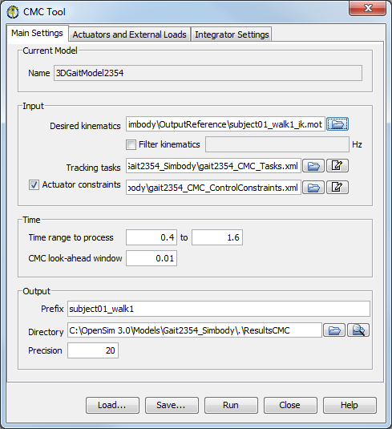

The computed muscle control tool is accessed by selecting Tools → Computed Muscle Control… from the OpenSim main menu bar (figure below). Like all tools, the operations performed by the computed muscle control tool apply to the current model. The name of the current model is shown in bold in the Navigator. See chapters Opening, Closing, and Using the Navigator Window for information on opening models and making a particular model current.
The Computed Muscle Control (CMC) Tool is controlled by a window with three tabbed panes (figure below). This window is the same as that used for RRA (see Residual Reduction Algorithm).
|  | The Main Settings pane is used to specify parameters related to the input kinematics of the current model, the time range for the analysis, and the output of the results. The Actuators and External Loads pane is used to specify additional actuators, such as residual and reserve actuators. The external loads and integrator settings are specified in the same manner as in Forward Dynamics.
|
|---|
At the bottom of all the Tool dialog windows are four buttons, located in what we call the Control Panel.
 | - The Load and Save buttons are used to load or save settings for the tool.
- The Run button starts execution.
- The Close button closes the window.
- The Help button takes you to the relevant section of the User Guide.
 | Note that the Close button can be clicked immediately after execution has begun; the execution will complete even though the window has been closed. |
- If you click Load…, you will be presented with a file browser that displays all files ending with the .xml suffix. You may browse for an appropriate settings file (e.g., subject01_Forward_Setup.xml or subject01_Scale_Setup.xml)) and click Open. The tool will then be populated with the settings in that setup file.
- If you have manually entered or modified settings, you may save those settings to a file for future use. If you click Save…, a Save dialog box will come up in which you can specify the name of the settings file. The name you specify for the file should have a suffix of .xml. Click Save to save the settings to file.
After you click Save, you may be presented with another dialog box that asks you whether or not you would like to save some of the settings to separate external files. This can be useful if you would like to reuse those settings for other trials or subjects. Check the boxes of the settings that you'd like to save to external files and specify the names of these files. All of these files should have a suffix of .xml.
|
|---|
CMC is run using the command cmc -S <setup file> where <setup file> is the name of the setup file, for example,
cmc -S subject01_Setup_CMC.xml
{kind=link}
{kind=link}